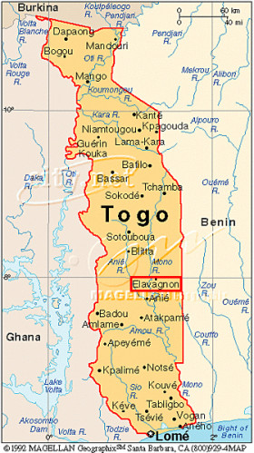

+33 781915227
raphaeldesrues111@gmail.com
13 Avenue de Comminges, Léguevin, FRANCE
Depuis 2023
Depuis 2019
2018-2019
2015-2018
Master 1 BioInformatique - In Silico Drug Design - Modélisation des Macromolécules
Université Paris Cité
Diplôme de formation en sciences pharmaceutiques
Département des sciences pharmaceutiques : Faculté de santé
Université Toulouse III - Paul Sabatier - Toulouse
PACES : Première Année Commune aux Etudes de Santé
Université Toulouse III - Paul Sabatier - Toulouse
Baccalauréat section Scientifique - Spécialité SVT
Lycée International Victor Hugo - Colomiers
04/2023-
08/2023
06/2022-
07/2022
2021
Impacts of Wilms’ Tumor protein 1 (WT1) residue 369 mutations and cytosine epigenetic modulation within cognate sequence on protein-DNA recognition
Université Friedrich-Alexander Nuremberg/Erlangen, Allemagne - Pr. Petra IMHOF
Design des molécules inhibitrices de UBE2N pour sensibiliser les cancers de l'ovaire aux inhibiteurs de PARP
CERMN, Caen, France - Pr. Jana SOPKOVA
Travail en officine - > 350 heures
PharmaSIEL : Association de Solidarité Internationale et Locale des Etudiants en pharmacie
3 semaines de volontariat à Elavagnon, Togo
Trésorier
Responsable international